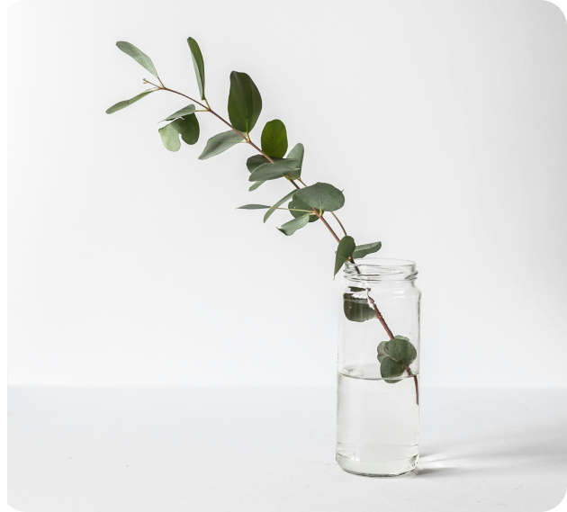
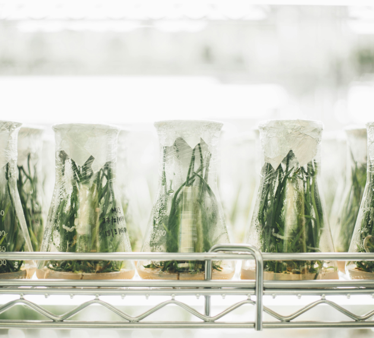

Erom Global Story that provides new
answers on health through nature.
answers on health through nature.
Erom Story.
Health solution corporation through the harmony of nature and
science Beneficial for humankind, beneficial for the world

Finding Erom's power that brings forth
science from natureRESEARCHER
science from nature
RESEARCHER
INTRODUCTION
Healthy power of nature!
We are Erom Global’s Life Science Research Institute.
